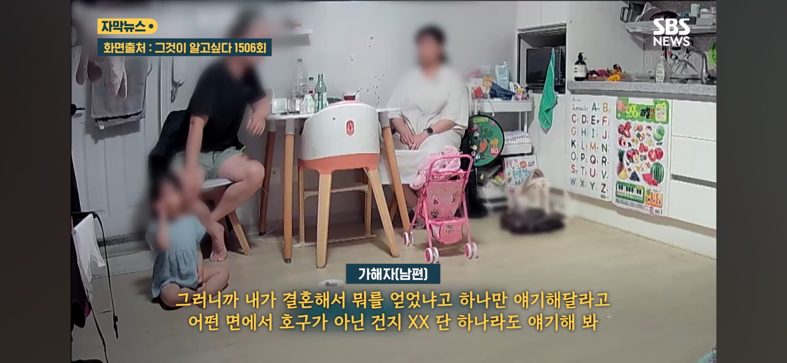
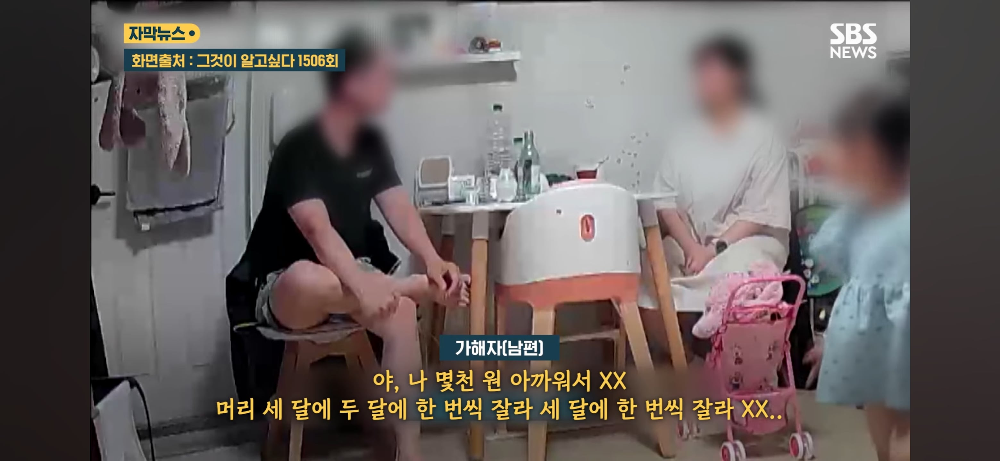
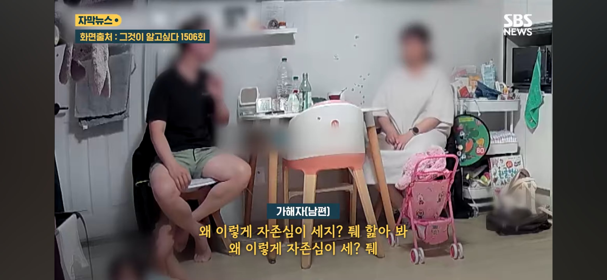
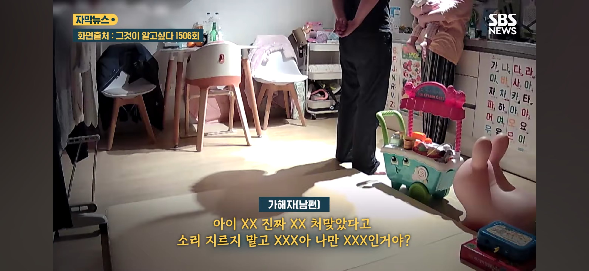
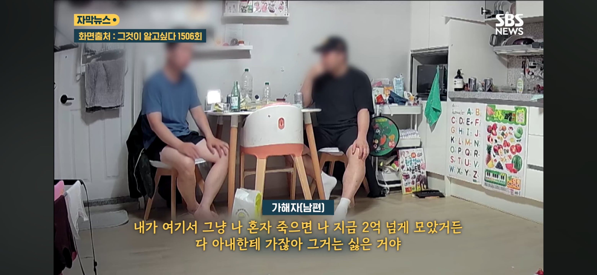

폭행의 이유는 아이 장난감 500원더 비싼거 샀다는게
폭행 이유
자신의 미래는 atm기다 결혼 잘못해서 인생 조졌다는말을
입에 달고 살았다고함 심지어 맞벌이였고 아내한테준 생활비는
월 70이였음





폭행의 이유는 아이 장난감 500원더 비싼거 샀다는게
폭행 이유
자신의 미래는 atm기다 결혼 잘못해서 인생 조졌다는말을
입에 달고 살았다고함 심지어 맞벌이였고 아내한테준 생활비는
월 70이였음
개드립에도 리버스페미 많음
아마 저거에 동감하는 애들 많을듯
이건 훌륭한 인칸커뮤절임이네요
신기하네.. 저런 사람도 결혼하기 전까지는 분명 행복한 가정을 꿈 꾼 적이 있었을거 아님?
그러니까 결혼하겠다고 생각을 했을거고..
어떤 과정을 거치다 저런 결론에 도달했을 지 내 머리로는 도저히 상상이 안되네
버러지같은 새끼
ㄴㄴ 애가 생겨서 한거임
애기 지우라고 엄청 강요했는데 부인분이 끝까지 지켜서 결혼한거임 그래서 지금 모든 이유를 다 부인한테 ㅈㄹ하다가 된거임
걍 혼자 살다가 뒤지던 말던 했어야할놈임
커뮤충이 현실에
커뮤충